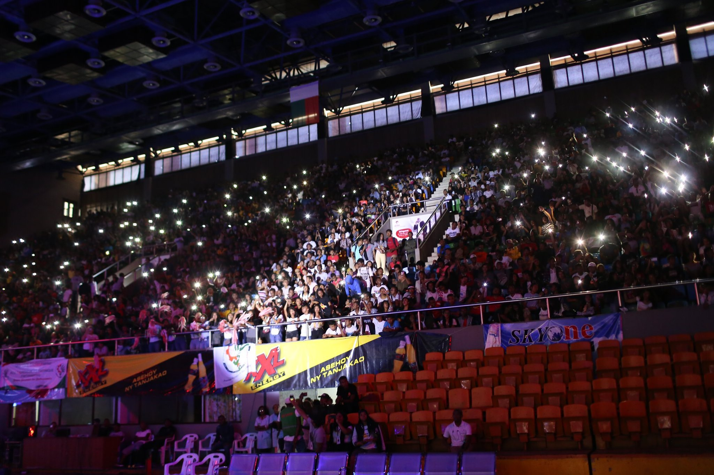
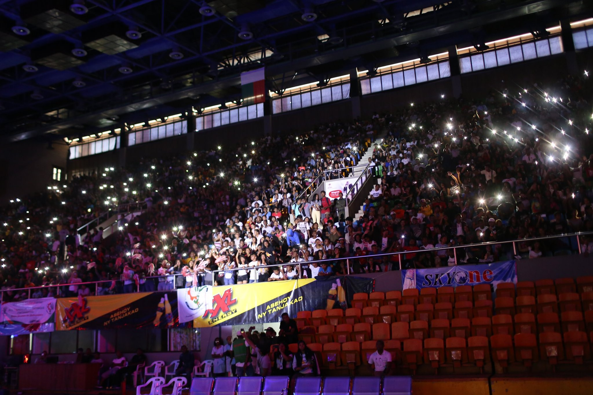
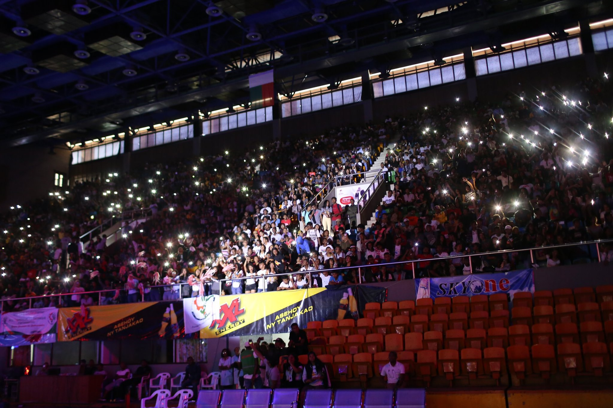

"plongez dans l'atmosphère enivrante de smatch'in. ne manquez pas l'occasion de revivre ces instants
magiques!"
Smatch’In est avant tout un tournoi universitaire de basketball, avec la participation des divers
établissements et instituts d’enseignement supérieur. Les concours de tir à trois points, de dunk
ainsi que de Miss et Mister, singularisent cette compétition. Un vrai festival de basketball et une
référence en termes d’organisation et d’affluence.
Plus de trente équipes et plus de 4.000 spectateurs sont en effet attendus au Palais des sports pour
vivre l’ambiance de fête du ballon orange pendant les huit jours de compétition.
Cette fois, l’Essca chez les dames et l’U-MAGIS chez les hommes, vainqueurs de la dernière édition,
sont les deux équipes à battre. Les autres formations, notamment les deux malheureuses finalistes en
2022, l’Imgam et l’Esmia, ont annoncé leur participation dans l’unique but de prendre leur revanche.
Le Palais des Sports Mahamasina, accueillera le tournoi annuel inter-instituts de basketball
Smatch’In, du 9 au 17 mars, après l’annulation de la dernière édition pour cause d’élection
présidentielle en novembre.
Cette version 2024 approuvée par la Fédération malgache de basketball
(FMBB) promet dans la mesure où il coïncide avec la célébration de ses dix ans
d’existence.
La dernière édition a eu lieu en 2022. C’était l’université jésuite U-Magis qui a
remporté la coupe chez les garçons.
Et comme basket-ball universitaire rime avec ambiance et fêtes, il y a
aussi eu durant l’événement des concours de danse, de DJ, de Miss et de Mister.
Il y a eu la Miss et ses dauphines, le Mister et ses dauphins. Mais aussi la Miss
photogénique et le Mister photogénique,

Chez les filles, le trophée était parti du côté de l’Ecole supérieure
sacré-cœur d’Antanimena (Essca). Initialement prévue du 11 au 19 novembre 2023,
cette 10e édition s’est vue être reportée par la Team Smatch’In estimant que les
conditions “ne sont pas réunies” pour tenir un événement réussi.
L’ambiance a été au rendez-vous, Les DJ,s du RDJ’s Teaml Dj Shinchan
l’animation de Rak Roots, Dalvis et a enflammé les supporters venus nombreux au
Palais.
guichet fermé, une très bonne qualité de l’animation, la satisfaction et
participation très active du public tout au long de l’après-midi. Le public était au
rendez-vous.
Le 09 jusqu'au 17 Mars 2024 dans le Palais des sports Mahamasina
Debout ou assis, venez assister
et soutenir votre école


 
